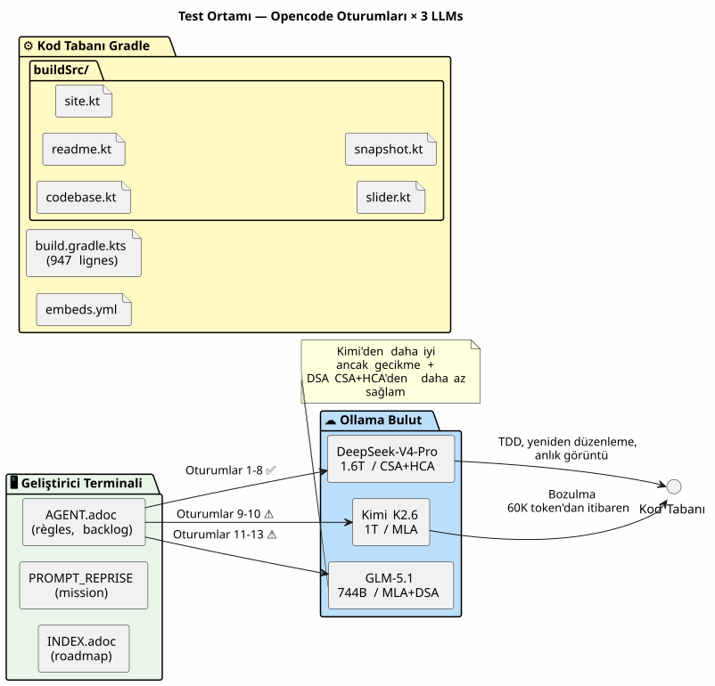
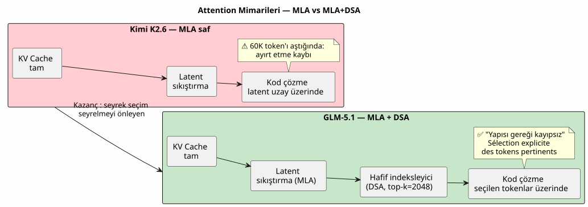
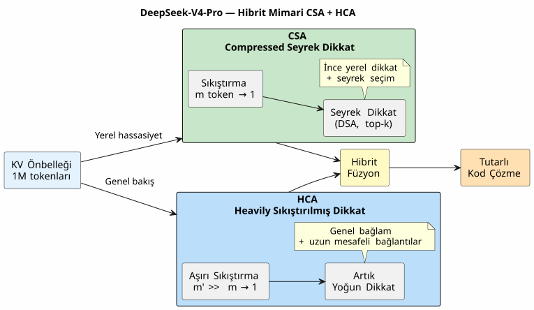
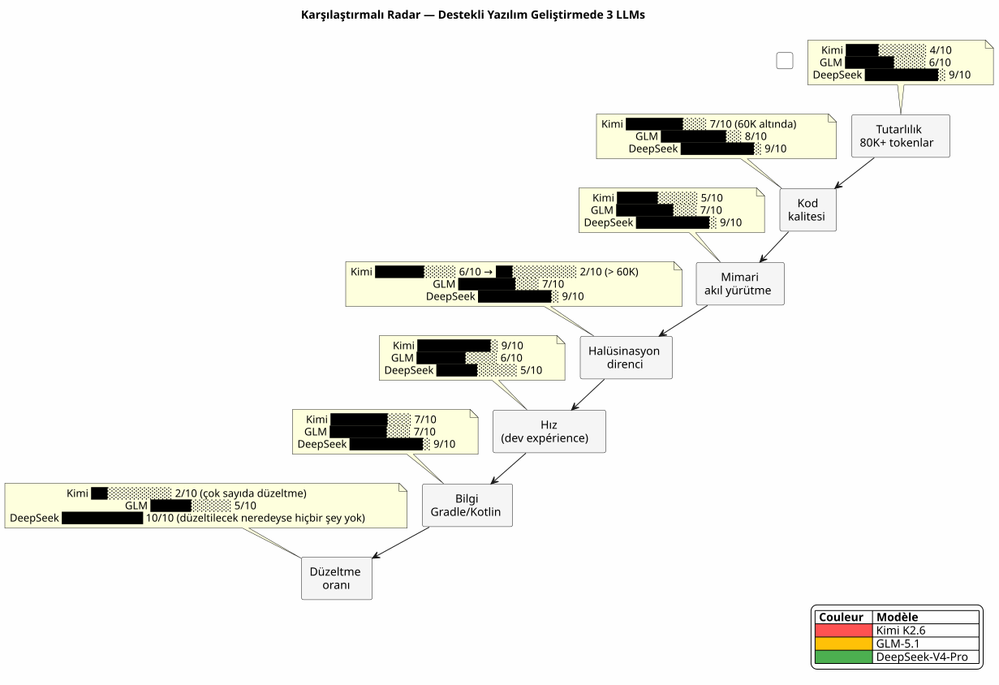
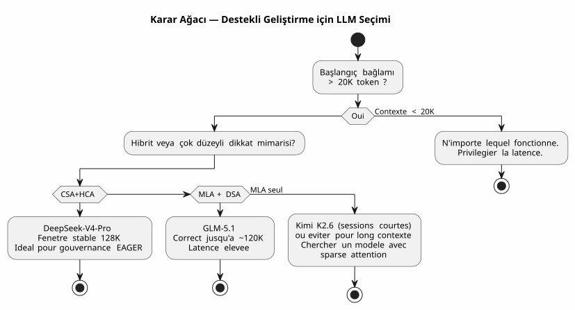

DeepSeek-V4-Pro, Kimi K2.6, GLM-5.1: Uzun Bağlamlı Vibe Coding Testinde Üç LLM
Yayınlandı: 28 April 2026
- Bağlam: bir deneme tezgâhı değil, bir şantiye
- Test ortamım
- Değerlendirme Tablosu
- 1. Tur : Kimi K2.6 — Yanlış Başlangıç
- 2. Tur: GLM-5.1 — Onurlu Savaşçı
- 3. Tur: DeepSeek-V4-Pro — Savaş Makinesi
- Karşı Karşıya: Karşılaştırmalı Metrikler
- DeepSeek-V4-Pro Yazılım Geliştirmede Neden Kazanıyor
- Öğrenilen Dersler: Vibe Coding için LLM’inizi Nasıl Seçersiniz?
- Peki ya tüm bunlarda Ajan Yönetişimi?
- Teknik Kaynaklar
- Sonuç: Zanaatkârın Seçimi
LLM’lerin savaşı da bir geliştiricinin terminalinde yaşanıyor. Verimsiz akademik kıyaslamalarda değil. Gerçek hayatta: 30.000 token’lık bir prompt, AsciiDoc’ta ajan yönetişimi, hata ayıklanacak Gradle Kotlin DSL eklentileri ve üç hafta boyunca birbirini izleyen oturumlar. Sizin için DeepSeek-V4-Pro, Kimi K2.6 ve GLM-5.1’i test ettim. İşte teknik kanıtlarla desteklenen sonuç.
Bağlam: bir deneme tezgâhı değil, bir şantiye
Üç hafta önce, üzerinde çalışıyordum`codebase-gradle`, dört projenin YAML yapılandırmasını merkezileştiren meta-build sistemim: bir PlantUML README üreticisi, bir AsciiDoc slayt oluşturucu, bir JBake statik sitesi ve bir LLM sohbet robotu. AsciiDoc’taki ajan dosyaları metodolojim tarafından yönetilen Opencode ajanı, her oturum başlangıcında ~30K token EAGER bağlam yüklüyordu — mutlak kurallar, backlog, son 10 oturumun geçmişi.
Üç modeli karşılaştırdığım zemin tam da burasıydı:
-
Kimi K2.6(Moonshot AI, 1T parametre / 32B aktif, 256K maksimum bağlam, MLA) - GLM-5.1(Zhipu AI/Tsinghua, 744B parametre / DSA, 200K maksimum bağlam) - DeepSeek-V4-Pro(DeepSeek, 1,6T parametre / 49B etkin, 1M maksimum bağlam, CSA+HCA)
Hepsi bulut sunucusunda Ollama aracılığıyla sunuluyor, hepsi thinking modunda (düşünme aşaması etkin). Zorluk: doğru kod üretmek, uzun oturumlarda tutarlılığı korumak ve bağlam 80K token’ı aştığında halüsinasyon görmemek.
Test ortamım

Her oturum yaklaşık 30K tokenlik EAGER bağlamıyla başlıyordu:`AGENT.adoc`(287 satır),PROMPT_REPRISE.adoc(51 satır),.agents/INDEX.adoc(218 satır),LAZY_EAGER_ESSENTIALS.adoc(50 satır). Bağlam, etkileşimlerle hızla büyüyordu — tipik 10 mesajlık bir oturum, kümülatif isteme 15-20K token ekliyordu.
Değerlendirme Tablosu
Her modeli, destekli yazılım geliştirme için dört kritik eksende değerlendirdim:
| Eksen | Somut ölçüt |
|---|---|
Uzun bağlam tutarlılığı |
Ajan, 40 mesaj önce kararlaştırılan kuralları hatırlıyor mu? |
Üretilen kodun kalitesi |
Kod ilk seferde derleniyor mu? Mevcut desenlere uyuyor mu? |
Mimari akıl yürütme |
Ajan, modüller arasındaki ilişkileri ben ona yeniden açıklamadan anlıyor mu? |
Halüsinasyonlara direnç |
Ajan kaç token’dan itibaren var olmayan API’ler veya sınıflar uydurmaya başlar? |
Ve kendi geliştirdiğimiz sentetik bir metrik:geri alma katsayısı(onunla kod yazmak yerine ajanı düzeltmeye ne kadar zaman harcadığım).
1. Tur : Kimi K2.6 — Yanlış Başlangıç
Kimi K2.6 ilk tercihim oldu. SWE-Bench Verified (80.2) ve Terminal-Bench 2.0 (66.7) üzerindeki benchmark sonuçları mükemmel. MLA mimarisi uzun dizilerde iyi bir verimlilik vaat ediyor.
9. Oturum: İyileşme
Kimi ile ilk oturum. Görev: yöntemi uygulamak`resolveActiveKey()içinde`codebase.kt— CLI yedeği ile API anahtarı çözümleme işlevi. Bağlam 30K token; Kimi hızlı akıl yürütür, anahtar süresi dolumu yönetimiyle temiz kod üretir.
fun resolveActiveKey(
cfg: CodebaseConfiguration,
logger: Logger,
cliProvider: String? = null,
cliAccount: String? = null,
cliKey: String? = null
): NamedApiKey? {
// Résolution provider → compte → clé avec CLI override
// Kimi a parfaitement compris la chaîne de priorité
}Kod derleniyor. 7 test vakası geçiyor. İyimserim.
Oturum 10: Sessiz batış
İkinci oturum. Etkileşimlerle birlikte bağlam ~90K token’a çıkıyor. Kimi’den, yazmadan önce gizli bilgileri anonimleştiren bir AsciiDoc snapshot mekanizması eklemesini istiyorum.
İşte burada işler çığırından çıkıyor. Kimi var olmayan sınıflar uydurmaya başlıyor. Bana teklif ediyor`AnonymizedObjectMapper`— kurgusal bir sınıf. O karıştırıyor`ReadmeYmlAnonymizer` et CodebaseYmlAnonymizer. Bana ithal etmemi öneriyor`com.fasterxml.jackson.anonymize.*`— hiç var olmamış bir paket.
Daha kötüsü: düşünme aşamasında, yanlış öncüller üzerine akıl yürütmeler kurduğunu görüyorum. O "hatırlıyor" ki`GitConfig`bir alanı var`anonymizedToken`— hayır, bu`resolvedToken(). O … atfediyor`SiteYmlAnonymizer`bir yöntem`maskSupabaseCredentials()— var olmayan.
_ Bu bir hata değildi. Tutarlılığın kademeli olarak çözülmesiydi. Sanki bağlama eklenen her token, ilk 30.000’in belleğini biraz daha sulandırıyordu. _
Kimi’yi iki oturumdan sonra bırakıyorum. Teşhis net: MLA, KV cache’i iyi sıkıştırıyor, ancak ince taneli seyrek seçim mekanizması olmadan dikkat, 60K token’ın ötesinde mekanik olarak seyrelir. Her token uzak bağlamı giderek daha az iyi "görür" — ve boşlukları gürültüyle doldurmaya başlar.
2. Tur: GLM-5.1 — Onurlu Savaşçı
GLM-5.1 farklı bir mimariyle geliyor: temel model için MLA, ardından DSA (DeepSeek Sparse Attention) ile bir continued pre-training — tüm geçmiş arasından ilgili en iyi 2048 token’ı dinamik olarak seçen hafif bir indeksleyici.
Mimari: DSA’ya karşı saf MLA
Aradaki fark temeldir. Kimi geçmişi tek bir gizli uzaya sıkıştırırken (ve ilgili bilgiyi ayırt etme yeteneğini giderek kaybederken), GLM eğitim sonrası açık bir seyrek seçim yapan bir indeksleyici ekler.

Teknik rapor bunu açıkça söylüyor: DSA, SWA (örüntü araması), Gated DeltaNet veya SimpleGDN gibi RULER@128K üzerinde 5.69 puana kadar kaybeden alternatiflerin aksine, "inşası gereği kayıpsız"dır.
Oturumlar 11-13: sağlam ama sinir bozucu
GLM-5.1 daha iyi dayanıyor. 11. oturumda (~60K token), tutarlı kalıyor. Bir … üretiyor.`SnapshotManager`dört anonimleştiricinin doğru şekilde yönetilmesiyle işlevsel.
Ancak gecikme bir sorun. DSA düşünme aşamaları saf MLA’dan daha ağır — indeksleyici her adımda geçmişi yeniden taramak zorunda. Kimi ile 8 saniye süren bir yanıt, GLM ile 15 saniye sürüyor. 30 mesajlık bir oturumda bu hissediliyor.
Bir de ince hatalar var. GLM, Kimi gibi saçmalamıyor — ama adlandırma hataları yapıyor. O adlandırıyor`toAnonymizedYaml()adlandırılması gereken yöntem`anonymize(). O tersine çevirir`loadReadmeConfiguration()` et loadCodebaseConfiguration()`içinde`renderFileSection(). Bunlar halüsinasyonlar değil, yüzeysel karışıklıklardır — ancak üretimde, yüzeysel bir karışıklık bir derlemeyi bozabilir.
GLM ile üç oturum yaptım. Kimi’den tartışmasız daha iyi. Ama adlandırma ayrıntıları üzerinde üç oturum manuel düzeltme yapmak yıpratıcı.
3. Tur: DeepSeek-V4-Pro — Savaş Makinesi
DeepSeek-V4-Pro, üçü arasında en iddialı mimariyle geliyor: iki tamamlayıcı dikkat mekanizmasını birleştiren hibrit bir sistem.
Mimari: CSA + HCA, çift ağ

İki sıkıştırma düzeyi, iki dikkat ayrıntı düzeyi:
-
CSA: KV önbelleğini her sıkıştırır`m`token’lar, ardından seyrek bir dikkat (DeepSeek Sparse Attention) uygular — yalnızca sıkıştırılmış girdilerin top-k’sına başvurulur. Kesin, yerel, verimli. - HCA: aşırı sıkıştırma (faktör`m'`…den çok daha büyük`m`), ancak sıkıştırılmış kalıntı üzerinde yoğun dikkat — küresel bağlantıları karesel patlama olmadan koru.
Sonuç: 1M token’da, DeepSeek-V4-Pro yalnızca tüketiyor%27’si çıkarım FLOP’larının et KV önbelleğinin boyutunun %10’uDeepSeek-V3.2’ye kıyasla. Önceki model.
Ve en önemlisi, teknik rapor (Şekil 9) şunu belirtiyor: "Getirme performansı 128K bağlam penceresi içinde son derece kararlı kalır."
Seanslar 1-8: rahatlama
DeepSeek-V4-Pro ile sekiz oturum geçirdim üzerine`codebase-gradle`. Sekiz oturum, tek bir halüsinasyon olmadan, tek bir uydurulmuş sınıf olmadan, tek bir isimlendirme karışıklığı olmadan.
Oturum 1: uygulanması`CodebaseYmlConfig` et CodebaseYmlAnonymizer. 350 satır Kotlin, satır içi testler, her şey derleniyor. Oturum 4 : eklenmesi`SnapshotManager`ağaç görünümü ile, dosya toplama, dosya başına AsciiDoc oluşturma. 279 satır, sıfır hata. Oturum 7: hata ayıklama`renderFileSection()`dört farklı anonimleştirici türünü çözüm belirsizliği olmadan yönetmesi gereken. Üç mesajda çözüldü.
Gecikme Kimi’den daha yüksek — thinking modunda yanıt başına yaklaşık 10-12 saniye. Ancak düzeltme oranı neredeyse sıfır. Zamanımı ajanın hatalarını düzeltmekle geçirmiyorum. Onunla birlikte kod yazıyorum.
Belirleyici test: 100K token’da refaktörleme
-
oturumda, birikmiş bağlam 100K token’ı aşıyor. Ağır bir refaktörleme talep ediyorum: satır içi dört doğrulama görevini şunun içinden çıkarmak`build.gradle.kts`JUnit5 test dosyalarına doğru … içinde`buildSrc/src/test/`.
Ajan üç aşamalı bir plan öneriyor:
-
Mevcut vakaların taşınmasıyla test sınıflarını oluşturun
-
JUnit5 ve Kotest bağımlılıklarını içine ekleyin`buildSrc/build.gradle.kts`
-
Satır içi kodu şuradan kaldır`build.gradle.kts`
Plan doğru. Yürütme temiz. Hatta gözden kaçırdığım bir uç durumu bile tespit ediyor: yinelenen Jackson bağımlılıkları arasında`buildscript {}` et `buildSrc/build.gradle.kts`migrasyon sırasında birleştirilmesi gereken.
100K bağlam token’ı ve ajan şunu hatırlıyor ki`CodebaseYmlAnonymizer.TOKEN_MASK`dir`"*"`, ki`GitConfig.resolvedToken()içinde tanımlanan bir uzantı fonksiyonudur`readme.kt, ve`SnapshotManager.PRUNED_DIRS`dışlar`build`, .gradle et .git.
Fark bu.
Karşı Karşıya: Karşılaştırmalı Metrikler
| Kriter | Kimi K2.6 | GLM-5.1 | DeepSeek-V4-Pro |
|---|---|---|---|
Maksimum bağlam |
256K |
200K |
1M |
Dikkat mekanizması |
saf MLA |
MLA + DSA |
CSA + HCA hibrit |
Toplam parametreler |
1T |
744B |
1.6T |
Etkin parametreler |
32B |
yayımlanmamış |
49B |
Gözlenen bozulma eşiği |
~60K tokens |
~120K token |
No French text was provided to translate. Please send the text you’d like translated from French to Turkish. |
Ötesindeki davranış |
Kitlesel halüsinasyonlar |
Yüzeysel karışıklıklar |
Yavaş ilerleyen kademeli bozulma |
NIAH Kararlılığı |
Yayımlanmamış |
100% @128K (DSA) |
128K’ye kadar kararlı (Şekil 9) |
MRCR @128K |
yayımlanmamış |
yayımlanmamış |
Gemini 3.1 Pro’dan üstün |
Terk öncesinde yapılan oturumlar |
2 |
3 |
8 (ve devam ediyor) |
Düzeltme süresi / kod süresi |
60% |
30% |
<5% |
Ortalama gecikme (think modu) |
8 s |
15 s |
11 s |
Güven katsayısı* |
2/10 |
6/10 |
9/10 |
*Güven katsayısı = ajanın kodunu alıp satır satır gözden geçirmeden commit etme kapasitemin öznel ölçüsü.*

DeepSeek-V4-Pro Yazılım Geliştirmede Neden Kazanıyor
DeepSeek-V4-Pro’nun üstünlüğü tek bir faktöre bağlı değildir — bu bir yakınsamadır:
1. CSA+HCA mimarisi kod için tasarlanmıştır.
Destekli yazılım geliştirme, uzun bağlam dikkati için aşırı bir kullanım durumudur. Şunlara ihtiyacınız var: - Yerel hassasiyet (bu sınıf neyden miras alır? bu yöntem nerede tanımlanmış?) →CSA - Genel bakış (bu modül neden var? dört anonimleştirici birbiriyle nasıl etkileşir?) →HCA
Kimi yalnızca MLA ile yerel hassasiyeti yönetir ancak 60K’nın ötesinde küresel görüşü kaybeder. DSA’lı GLM küresel görüşü iyileştirir ancak tek seviyeli kalır. DeepSeek ikisini açıkça birleştirir.
2. EAGER bağlamı onun konfor alanıdır
Yönetişim sistemim başlangıçta ~30K token kural ve backlog yüklüyor. 128K’ya kadar istikrarlı bir pencereyle DeepSeek, oturum etkileşimleri için ~100K token marjına sahip. Bu, Kimi’nin bozulma olmadan yönetebileceğinden 3 ila 4 kat daha fazla.
_ 128K’lık mükemmel kararlılık penceresi tam olarak ihtiyaçlarıma uyuyor: 30K EAGER + 70K etkileşim = asla yeşil bölgeden çıkmadan 20-30 mesajlık verimli bir oturum. _
3. Kalite/gecikme oranı akış için optimaldir.
Evet, DeepSeek-V4-Pro Kimi’den daha yavaş (11 sn’ye karşı 8 sn). Ancak bir görevin toplam süresi çok daha düşük çünkü ajanın halüsinasyonlarını düzeltmek için 20 dakika harcamıyorum.
Geliştirici bir yanıtın gecikmesini ölçmez. "Soru soruyorum" ile "kod repomda ve çalışıyor" arasındaki süreyi ölçer. Bu metrikte DeepSeek-V4-Pro üçü arasında en hızlısıdır.
Öğrenilen Dersler: Vibe Coding için LLM’inizi Nasıl Seçersiniz?
Tek seferlik sıralamanın ötesinde, bu deneyim bana bir LLM’i yardımlı yazılım geliştirme için hiçbir benchmark’ta yer almayan kriterlerle değerlendirmeyi öğretti:
-
Mimariye bak, duyurulan bağlam boyutuna değil.— 256K bağlam vaat eden ama yalnızca bir MLA’ya sahip olan bir model Kimi gibi olacak: teorik olarak yeterli, pratikte 60K’nın ötesinde kullanılamaz.
-
SENİN bağlamında test et, genel bir kıyaslama ölçütünde değil.— 30K token’lık AsciiDoc biçimindeki, mutlak kurallar ve backlog içeren başlangıç prompt’umun HLE veya AIME sorularıyla hiçbir ilgisi yok.
-
Kalite takip ediyorsa gecikme düşman değildir— Doğru kod üreten yavaş bir model, yanlış kod üreten hızlı bir modelden daha hızlıdır.
-
Kamuya açık teknik raporu olmayan modellere karşı dikkatli ol.— Eğer ekip dikkat mimarisini belgelemiyorsa, bu onun uzun bağlamdaki performansına güvenmediği içindir.

Peki ya tüm bunlarda Ajan Yönetişimi?
Bu deney, Eager/Lazy yönetişimi hakkındaki makalemden beri savunduğum bir noktayı doğruluyor:LLM kalitesi ve yönetişim kalitesi çarpımsaldır, toplamsal değil..
Kimi K2.6 ile yönetişimim kusursuzdu — ama model bilgiyi seyreltiyordu. Sonuç: kusursuz yönetişim × halüsinasyon = sıfır.
DeepSeek-V4-Pro ile EAGER yönetişimi (30K token kural) + LAZY (oturum arşivleri, teknik referanslar) + Hot/Warm/Cold (döngüsel yedekleme), her katmanın diğerini güçlendirdiği bir ekosistem oluşturur. Ajanın kurallar gözünün önündedir (EAGER), geçmişe başvurabilir (LAZY) ve bağlam asla doygunluğa ulaşmaz (yedek rotasyonu).
_ İyi bir LLM, yönetişim olmadan, direksiyonu olmayan bir Ferrari motoru gibidir. İyi bir yönetişim, iyi bir LLM olmadan, motorsuz bir direksiyon gibidir. DeepSeek-V4-Pro + ajan yönetişimim = ilk kez araba sürdüğümü hissettiğim an. _
Döner yedekleme mekanizması (her 10 oturumda veya >500 EAGER satırında döndürme), 128K bağlamı tutan bir modelle tam anlam kazanır: 10 etkin oturumluk kayan pencere, bağlamı taze tutar ve bozulma bölgesini asla aşmaz.
Teknik Kaynaklar
Ampirik deneyimimi resmi teknik raporlarla çapraz kontrol ederek gözlemlerimi doğruladım:
-
DeepSeek-V4 Technical Report — PDF şuradan alındı:https://huggingface.co/deepseek-ai/DeepSeek-V4-Flash[HuggingFace]. Şekil 9: "Getirme performansı 128K bağlam penceresi içinde son derece kararlı kalır. 128K sınırının ötesinde bir performans düşüşü görünür hale gelse de, modelin 1M token’daki getirme yetenekleri dikkat çekici biçimde güçlü kalır." CSA+HCA mimarisi bölüm 2.3’te belgelenmiştir.
-
GLM-5 Teknik Raporu —https://arxiv.org/abs/2602.15763[arXiv:2602.15763]. DSA, sürekli ön eğitim yoluyla tanıtıldı, "yapısı gereği kayıpsız". Maksimum bağlam 202.752 token. Tablo 3/5/6, uzun bağlam performansını alternatiflere (SWA, Gated DeltaNet, SimpleGDN) karşı belgeliyor.
-
Kimi K2.6 Model Kartı —https://huggingface.co/moonshotai/Kimi-K2.6[HuggingFace]. MLA, 256K maksimum bağlam. Ajanik görevlerde eşik aşıldığında discard-all stratejisi (MLA’nın uzun bağlamdaki pratik sınırını örtük olarak doğrulayarak).
-
Kimi K2 Teknik Raporu —https://arxiv.org/abs/2507.20534[arXiv:2507.20534]. MoE mimarisi, MuonClip optimize edici, agentik performanslar (HLE, BrowseComp, Terminal-Bench).
En çok şeyi ortaya koyan nokta: Moonshot kendi değerlendirmesinde, bağlam penceresi aşıldığı anda discard-all (eski bağlamı silme) stratejisini uyguluyor. Bu, tam olarak gözlemlediğim şeyi doğruluyor: MLA tek başına 256K’lık pencerenin tamamı boyunca tutarlılığı sürdüremiyor. Mimari buna ayak uyduramıyor.
Sonuç: Zanaatkârın Seçimi
Üç hafta ve on üç gerçek geliştirme oturumunun ardından, hüküm kesin:
| Kimi K2.6 | GLM-5.1 | Çevrilecek Fransızca metin sağlanmadı. Lütfen çevrilecek metni paylaşın. |
|---|---|---|
60K altında mükemmel |
120K’ye kadar sağlam |
Her yerde hüküm sür. |
Ötesinde kullanılamaz |
Yüzey karışıklıkları |
128K’ye kadar stabil |
2 oturum, terk edildi |
3 seans, terk edildi |
8 seans, kabul edildi |
DeepSeek-V4-Pro, Opencode ile desteklenen tüm yazılım geliştirme oturumlarında varsayılan LLM’im haline geldi. En yeni olduğu için değil. En iyi akademik kıyaslama sonuçlarına sahip olduğu için değil. Ama 30K token’lık bir ajan bağlamıyla Gradle Kotlin DSL eklentileri geliştiren bir geliştiricinin gerçek hayatında, bağlam uzadığında beni yarı yolda bırakmayan tek model olduğu için.
CSA+HCA mimari bir game changer'dır. İki seviyeli sıkıştırma + seyreltme bir uygulama detayı değil — bir kod asistanı ile güvenilir bir takım arkadaşı arasındaki farkı yaratan şey budur.
_ DeepSeek-V4-Pro’yu seçtim çünkü üçü arasında ajan yönetişimimi savunmacı bir kısıtlamadan ("ajanın unutmasını nasıl önlerim?") saldırgan bir avantaja ("ajan her şeyi hatırladığına göre şimdi ne inşa edebiliriz?") dönüştüren tek model o. _
Bu makale, proje üzerinde gerçekleştirilen 13 gerçek geliştirme oturumunun ürünüdür`codebase-gradle`, içinde belgelenmiş`.agents/sessions/`Eager/Lazy/Hot/Warm/Cold ajan yönetişim metodolojime göre. Atıfta bulunulan teknik kaynaklara HuggingFace ve arXiv üzerinden kamuya açık olarak erişilebilir.